infograf/ai Brand Book
A speculative brand world, directed with AI · ELVTR Final Project
Nick George · October 2026
Strategy
The market gap
Everyone has the models
Access to generative AI is no longer an edge. Any studio can type a prompt, and soon every client can too.
Most AI film looks generated
Neon, glow and generic robots. Work that no brand owns, made with no visible direction behind it.
Comms teams need a director
Enterprise and government teams want higher-craft film, animation, social and digital work, with the rigour and governance they already expect.
Strategy
The brand seed
Direction, Not Generation.
AI is the production capability. Creative direction is the product.
infograf/ai is the AI-directed division of Infografia. It takes 15 years of art direction experience and extends those skills and capabilities with AI, directing generative tools the way a director of photography directs a camera.
Capability leads. Speed and cost are the proof, never the pitch.
One visual style
Matte white ceramic and embossed relief, in greyscale, with a single gloss accent: the visor. Shown in two tones, light and dark.
Rejected looks
Generic AI robots, neon and cyberpunk, glowing circuitry, gradient blobs and AI sparkle.
Why
These are the clichés that stand in for “AI”. The brand shows a director instead.
Strategy
The core audience
One audience
Communications teams in enterprise and government: transport, health, science and infrastructure.
They already trust Infografia's craft. They do not need convincing that AI is legitimate. They need the same bar, delivered faster, with clear answers on governance, copyright and sourcing.
Message blend: 80 percent capability, 20 percent cost and speed.
One category, one service
Category: AI-directed creative production.
Service: AI creative direction, for any design output. Film, animation, social and digital are where it shows up, not separate services.
Not for
Clients who want cheap, fast AI content with no direction involved. That is the commoditised end of the market the brand is positioned against.
What they buy
15 years of art direction, a visible process and a governed system.
Visual world
The brand scaffold
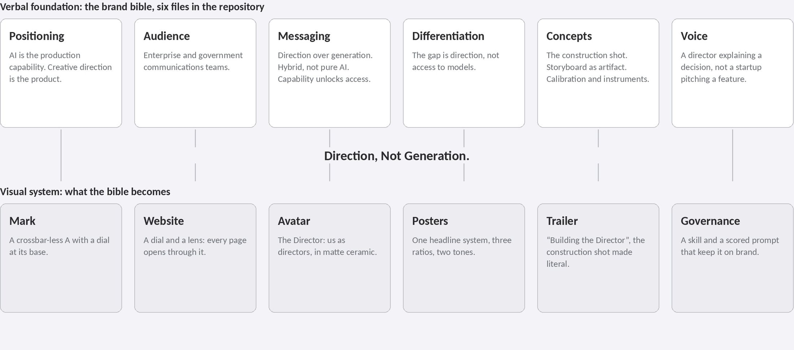
Everything in the visual world is built on six verbal files. One idea runs through both tiers.
Visual world
The Director
The hero of the brand. A futurist avatar of us as directors, built from the founder's likeness. The human is still in the chair; the visor is the viewfinder. Matte everywhere, with gloss on the visor only.
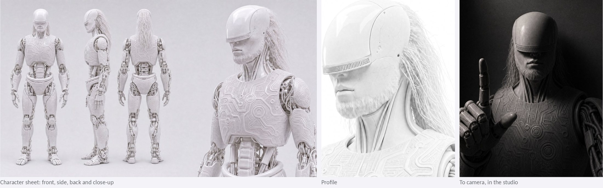
Visual world
The poster system, all formats
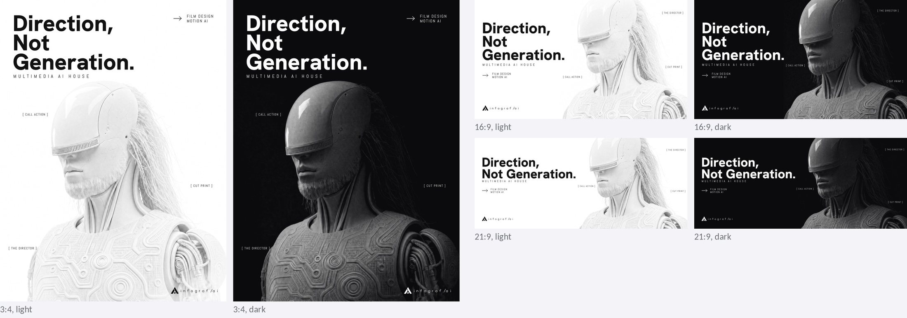
One headline system, three ratios, two tones. Headline in Hanken Grotesk, support in Abel. Page #FFFFFF or #0B0B0D. The image is generated; the page is levelled and the type and logo are set with real fonts.
Visual world
The mark
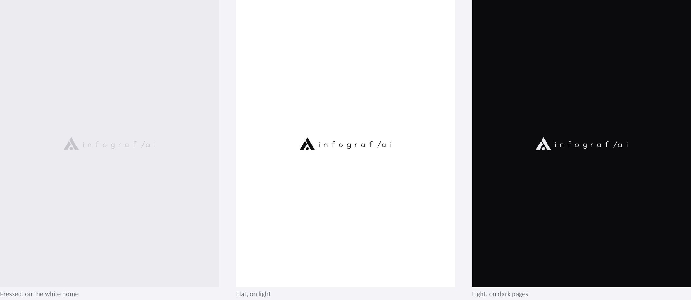
A crossbar-less A with a dial at its base and a slice cut out as the pointer, paired with the infograf/ai wordmark. Pressed in light grey on the white home, light on dark pages.
Visual world
The website, the home
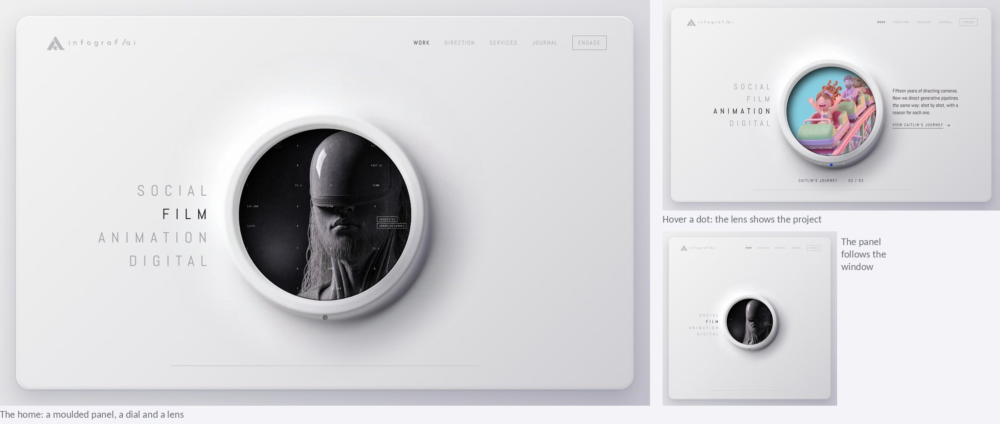
A white moulded control panel. The words beside the dial are the outputs: Social, Film, Animation, Digital. Clicking the ring turns to the next; dots on the ring pick a project, and the lens shows it. Working prototype: infograf-ai.netlify.app
Visual world
The website, inside
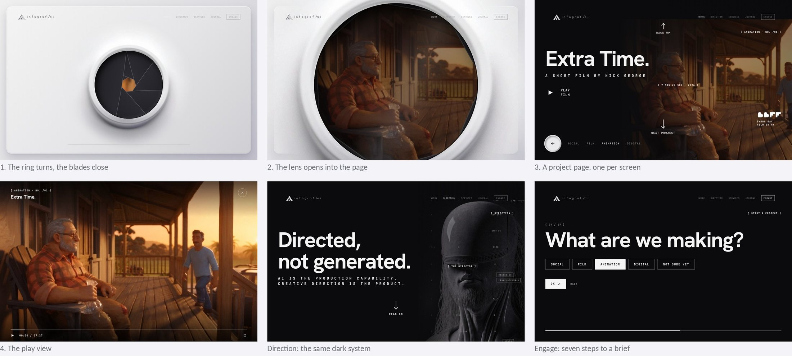
Every menu item opens through the lens in about 1.2 seconds. Each section is one scrolling page of projects, in the same dark system as the posters.
Visual world
The cinematic trailer
“Infografia, enhance_”
The brand's summary piece, shown here as a 25-second preview. The Director is studied piece by piece in the dark: hair, relief, cables, the visor. Then the world turns white.
Supers
Infografia, enhance. Fifteen years of craft. Film, design, motion. Now directed. Every frame directed. The Director.
How it was made
A storyboard and animatic first, then an approved start frame for every shot before any motion. The titles decode in over each shot, set in the clear side of the frame.
System logic
The engine and master prompts
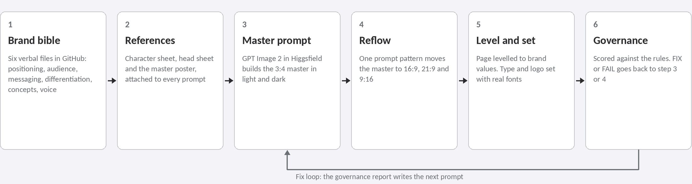
Master prompt: reflow
“Reflow [master poster] into a [ratio] layout. Keep the same design system exactly: page colour, type, weights, character, logo and the same words with the same spelling. New arrangement: [rules for that ratio]. Only the visor is glossy; all other surfaces are matte.”
References and node workflow
The character sheet, head sheet and master poster are attached to every prompt, never re-described.
The six brand bible files are joined in Fuser and passed to an LLM, which writes the art-direction prompt.
Every prompt edits an approved image. Generated type is a layout guide only.
Governance
A scored prompt with a fix loop
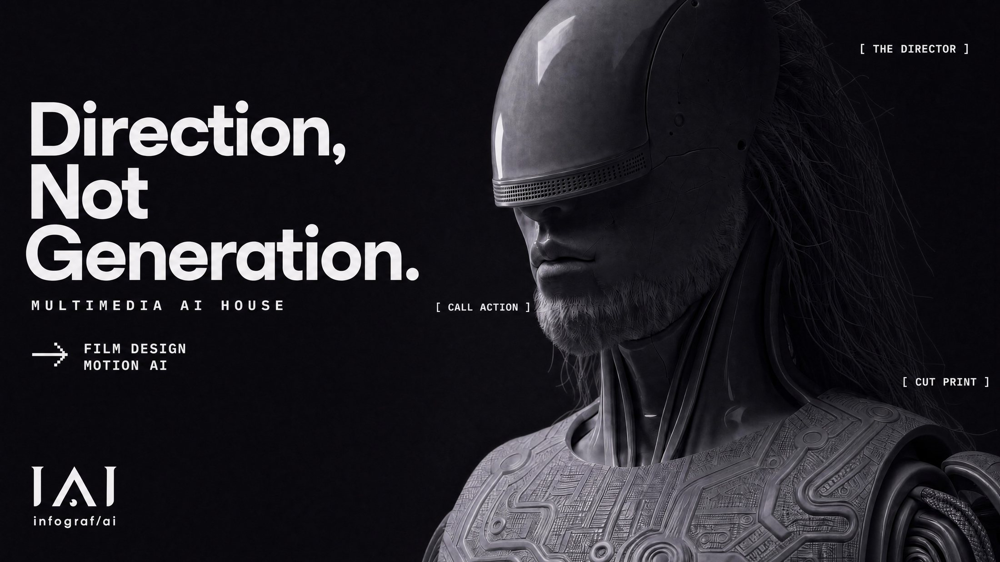
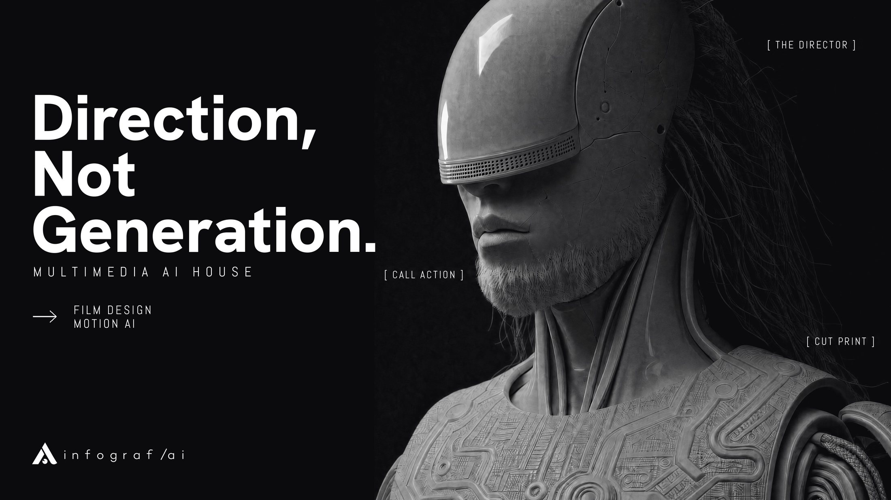
The prompt scores seven criteria against the master
Character identity (20): 90, then 90.
Surface finish (15): 55, then 85. Gloss on the neck removed.
Tone (10): 85, then 95. Page levelled to #0B0B0D.
Typography (20): 95, then 95. Now set, not drawn.
Logo (10): 90, then 90.
Layout for ratio (15): 95, then 95.
Protected zone (10): 70, then 90. Label moved clear of the beard.
Rules of the report
Each score comes with a confidence level and one line of visible evidence.
PASS at 85, FIX from 60 to 84, FAIL below 60. Any criterion under 50 caps the verdict at FIX.
The top three fixes are written as prompt instructions.
Where it lives
The prompt and the full skill (character, tone, type, logo and layout per ratio) are in github.com/infografiaco/InfografiaAI, under agent/visual. Scored here by Claude.
How it was done
The Director
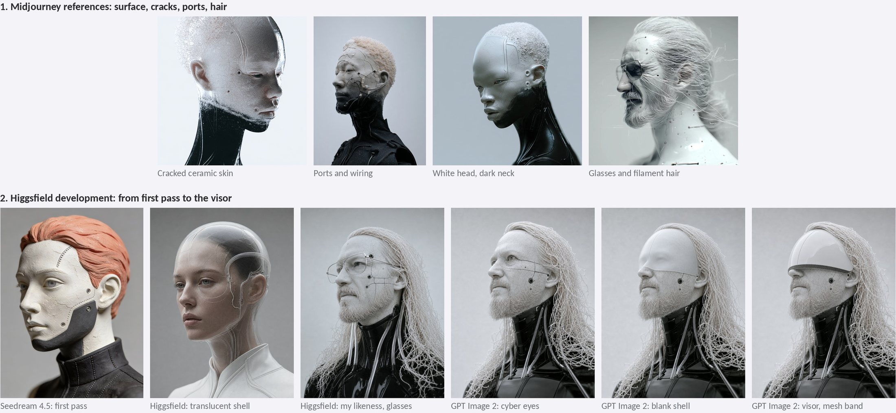
Thought process
Decision: an avatar of us as directors, from my own likeness, not a generic robot.
Broke: muscle and abs on the body, toy-like joints, relief too uniform, gloss everywhere.
Fix: machine armour, cable joints, relief in three scales, then the matte rule.
Work process
Midjourney references set the surface. A first pass in Seedream, then my likeness with glasses.
The glasses became cyber eyes, then a shell, then the visor. Body and relief refined on character sheets.
146 generations. 1 character sheet and 1 head sheet kept.
Tool selection
Midjourney for references only.
GPT Image 2 held the character across edits.
Nano Banana Pro made the most faithful head sheet. Seedream 4.5 was used for the first pass only.
How it was done
The posters
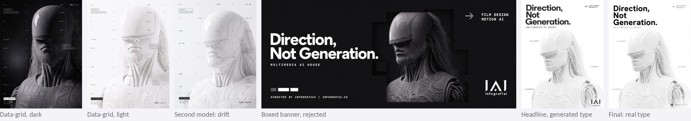
Thought process
Decision: one headline system in two tones, reflowed across ratios.
Broke: misspelt labels, type over the face, boxes behind the figure, a different white and black on every render.
Fix: protected zone and flat page rules, the page levelled, type and logo set with real fonts.
Work process
A data-grid layout came first, then the headline system replaced it.
The 3:4 master was reflowed to 16:9, 21:9 and 9:16, then re-rendered matte.
About 60 layouts. 6 masters and 2 social frames kept.
Tool selection
GPT Image 2 lays out a poster from a reference.
Models cannot hold a font or a colour value, so Claude levelled the page and set the type in code.
Hanken Grotesk and Abel.
How it was done
The logo
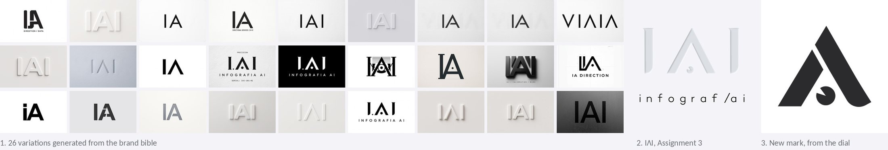
Thought process
Decision: material, not effect. A crossbar-less A, kept from the first round.
The IΛI mark from Assignment 3 held the relief idea. Building the website's dial suggested a stronger one: put the dial into the A.
A blue pointer was tested and removed; the slice now stays cut out.
Work process
26 variations generated from the brand bible through Fuser.
IΛI chosen and redrawn as vector for Assignment 3.
The new mark was drawn from the dial: an A with a dial at its base and a slice cut out as the pointer. Refined in Illustrator.
Tool selection
Fuser and an LLM for the art-direction prompt; image models for range.
Illustrator for the final, because a logo has to be exact.
The website shaped the logo: the dial came first.
How it was done
The website
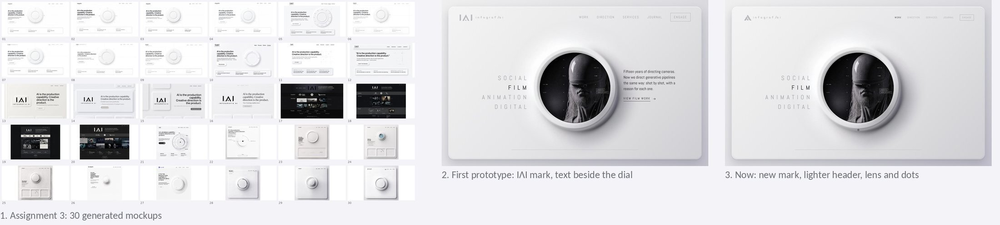
Thought process
Decision: one dial as the director's control, and the lens as the way into every page.
Tried and dropped: a white header bar, which vanished during the lens opening; the lens image zooming into the page, which landed off-register; a fixed square panel; a 10px menu.
Fixes: a straight fade through black, a panel that follows the window, a 12.5px menu.
Work process
30 homepage mockups generated in Assignment 3; 2 kept as the starting point.
Then built as a working prototype: the dial, the dots, the lens opening, project pages, play view, Direction, Services, Journal and a seven-step brief.
Next: the phone layout, the remaining projects and the real build.
Tool selection
Seedream 4.5, Gemini Image, GPT Image and FLUX.2 for the first mockups.
Claude built the working prototype in code from the approved stills.
Hosted on Netlify as a preview.
How it was done
The trailer
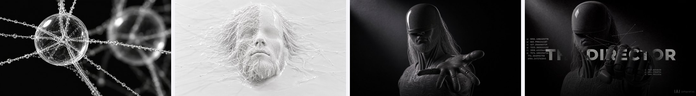
Thought process
Decision: study the Director piece by piece in the dark, then let the open hand turn the world white. He walks away into it on the brand line.
Broke: the first 90-second particle and fluid build was too much for AI video. Threads came out static, with glow and sparkle. In the kinetic-type tests, words were lost behind the figure.
Fix: a shorter, simpler story, built from approved stills. The titles were set with real fonts in the clear side of every frame.
Work process
A 40-frame storyboard and animatic came first. Then every start frame was made from the character sheet and approved before any motion.
One shot per clip, each from its start frame. A background cutout was made for the shots where type sits behind him.
Three cuts were tested: a camera-data HUD edit, a bold white kinetic edit, and the final, with titles decoding in Abel over a piano score. About 60 stills and 15 clips.
Tool selection
GPT Image 2 for start frames, with the character sheet as the first reference on every frame.
Seedance 2.5 for motion. Higgsfield's background remover for the masks. ElevenLabs for the score.
Claude assembled the edit, titles and graphics in code in Higgsfield's Katana workflow, so the type stays exact.
Direction, Not Generation.
- Email nick@infografia.co
- Phone +61 418 481 527
- Web www.infografia.co
- Prototype infograf-ai.netlify.app